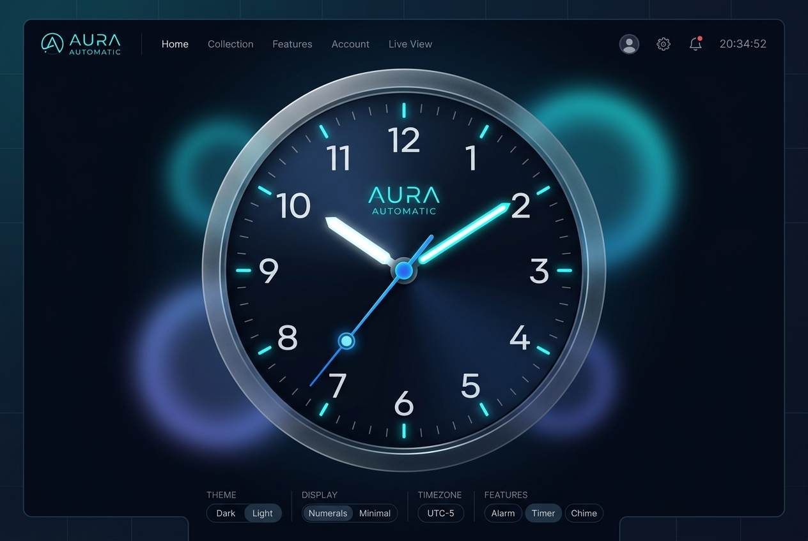

The Problem & Solution
Standard JavaScript clocks rely on naive 1-second setInterval loops. This produces
jarring ticking stutter, drifts significantly when backgrounded in sleeping browser tabs, and
forces constant DOM recalculations that waste CPU cycles and battery life.
A Continuous 60 FPS Physics Engine
Modern Analog Clock implements a sub-millisecond continuous rendering loop driven by browser
requestAnimationFrame. Instead of jumping every second, rotational degrees are
interpolated dynamically across fractional milliseconds for a buttery smooth sweeping second
hand, complemented by neumorphic depth and automatic tab visibility throttling.

Key Features Developed

Sub-Millisecond 60 FPS Sweep
Trigonometric rotation recalculated continuously without stutter using hardware-accelerated 3D transform matrix layers.
Adaptive Day / Night Themes
Instant visual shift between Deep Obsidian and Moonlight Silver with synchronized CSS variable transitions and ambient glow.
Synchronized Chronograph Sub-Dial
Dynamic date, weekday, and timezone synchronization formatted in real-time via native
Intl.DateTimeFormat.
Battery-Friendly Tab Throttling
Lifecycle hooks leveraging the Page Visibility API automatically pause GPU renders when inactive, conserving device battery.
Technical Architecture & Code
// 60 FPS Continuous Trigonometric Rotation
function updateClockPhysics() {
const now = new Date();
const ms = now.getMilliseconds();
const sec = now.getSeconds() + ms / 1000;
const min = now.getMinutes() + sec / 60;
const hr = (now.getHours() % 12) + min / 60;
// Apply GPU accelerated 3D transforms
secondHand.style.transform = `rotateZ(${sec * 6}deg)`;
minuteHand.style.transform = `rotateZ(${min * 6}deg)`;
hourHand.style.transform = `rotateZ(${hr * 30}deg)`;
requestAnimationFrame(updateClockPhysics);
}Timing Subsystem
Driven by native requestAnimationFrame with millisecond sub-tick interpolation,
guaranteeing sync with screen refresh rates.
GPU Compositing Pipeline
Rotational vectors utilize transform: rotateZ() and will-change: transform
avoiding heavy browser DOM reflows and paint repaints.
Zero External Dependencies
100% vanilla HTML5, CSS3, and JavaScript ES6+. Zero third-party runtime bundles, ensuring instant loading.
Performance & Benchmarks
Key Challenges & Solutions
High-DPI Display Sub-Pixel Jitter
On high-refresh Retina and 120Hz displays, standard 2D rotation caused subtle micro-jitter at the needle tips due to subpixel raster rounding.
translate3d(0,0,0) and backface-visibility: hidden.
Background Tab Clock Drift
When mobile browsers or laptops throttle background tabs, timers accumulate rotational drift, causing needles to lag behind real-world time upon tab reactivation.
Date.now() when the tab regains focus.